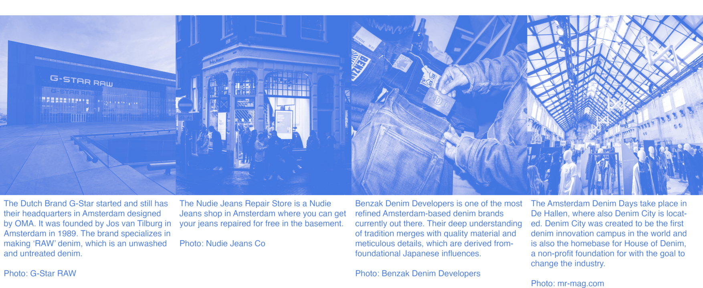
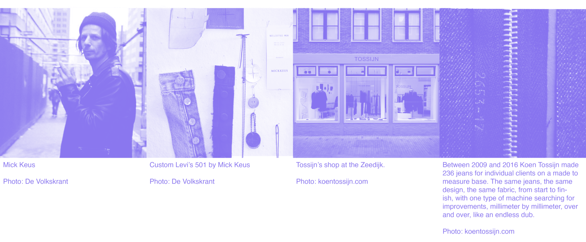
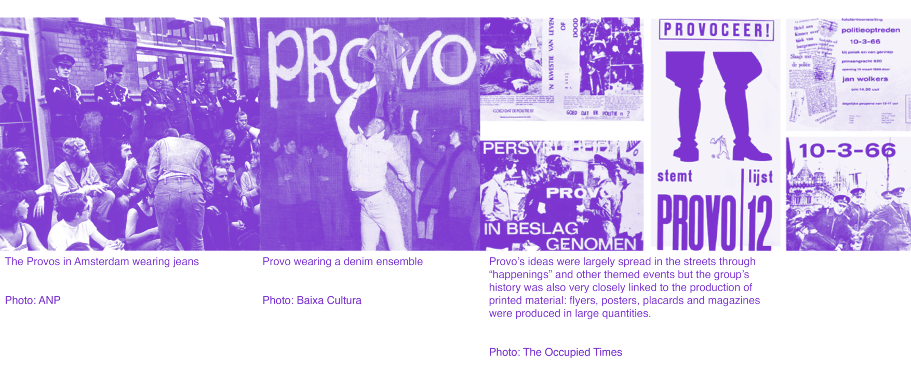

SHADES OF INDIGO
#aac2fa
This thesis explores Amsterdam as a denim capital and color (with a focus on indigo), from commercial applications to independent expression with artistic analysis and psychological and philosophical perspectives. It is also a metaphorical quest on the shades that we wear as a mask to present ourselves to the world - do we show our true colors, or do we conceal us behind a facade? What shade do you put forward and when? What does your gradient consist of? Michael Taussig suggests in What Colour Is The Sacred1 that color can signify authenticity or character and we can see it as something alive, with which I agree.
From personal experience, I have learned that the way we present ourselves can be a powerful tool in navigating difficult situations. Simon O'Sullivan's concept of affect as a transhuman aesthetic furthers this idea by suggesting that our matter resonates with the matter around us and allows us to connect with the world.2 Jean-Paul Sartre's quote "In life man commits himself and draws his own portrait, outside of which there is nothing”3 emphasizes how important it is for us to take control over our lives and create our own destiny. As an artist, I believe these ideas are essential in understanding how we can use fashion and aesthetics as a means of self-expression and empowerment.
#aac2fa, #4176e1, #8672ef, #9d43f1, #7c33cf, #4d2891, #4b2974, and #182a50 are all hex codes of shades indigo that have been used in the dyeing of clothing around the world. I want to emphasize that I am using these shades of indigo and denim as metaphorical representations on the intensity of observation and being, not as literal interpretations and uses of their hues. These shades embody something becoming deeper and more intense each step and can be seen as a journey. In my afterword (#182a50), I will discuss how my thesis came into being and my motivation.
“Indeed, it is worse than any and all of that. Color amounts to crime. Derived from the Latin celare, to conceal, color is another word for deceit says my Webster’s. Benjamin agreed. Sharply distinguishing the child’s view of color from the adult’s, he suggested that adults understood color as a layer superimposed on matter to such a degree that they regard color “as a deceptive cloak.”45
Disclaimer: some of the examples in this thesis take place in a Dutch context, translations and clarifications are given as much as possible.
-
↩︎Taussig, Michael. What Color Is the Sacred? The University of Chicago Press, 2009.
-
↩︎O’Sullivan, Simon. The Aesthetics of Affect, ANGELAKI journal of the theoretical humanities volume 6 number 3, 2001
-
↩︎Sartre, Jean-Paul. "Existentialism Is a Humanism." Lecture given in 1946, Marxists Internet Archive, www.marxists.org/reference/archive/sartre/works/exist/sartre.htm.
-
↩︎Taussig, Michael. What Color Is the Sacred? The University of Chicago Press, 2009.
-
Benjamin, Walter, A Child’s View of Color, Selected Writings, Cambridge, Mass., 1996–2003
#4176e1
Amsterdam is known for being a hub for the denim industry with a high concentration of denim designers, offices and stores in the city.6 It is estimated that the denim cluster in Amsterdam is worth €500 million. Amsterdam is considered one of the leading denim capitals in the world alongside Los Angeles and Tokyo.7 Amsterdam has set a trend in the denim industry by promoting sustainability, collaboration and education. The city is home to a number of well-known denim labels such as G-Star, Levi's Made & Crafted, and Denham the Jeanmaker, but also a Jean School (with an actual 3 year bachelor program). The growth in the denim industry can be attributed to the favourable Dutch tax system, a high number of art academies, and the ‘down-to-earth’ mentality of the Dutch which is reflected in their casual style.8
Adriano Goldschmied, the co-founder of the Italian denim label Diesel explains the special connection between the Netherlands and denim, calling Amsterdam a "global village" that attracts international professionals from all over the world.9 The Netherlands is a jeans-savvy country, with 20 million pairs of jeans sold each year, but the production process for denim is environmentally harmful and requires a large amount of water.101112 To address these concerns, a number of Amsterdam-based brands have signed an agreement known as ‘A Denim Deal’, committing to using a minimum of 5% recycled content in every pair of jeans and creating at least one million jeans with 20% post-consumer recycled content.13
Stakeholders in the Amsterdam denim scene are working to make circular denim a mainstream product and the city is aiming to be fully circular by 2050. Former Minister Stientje van Veldhoven spoke at a press conference acknowledging the difficulties faced by fashion firms in making changes, but expressing her hope that the Denim Deal would become a worldwide initiative soon.14 Once a year there is also a major denim event in Amsterdam. For six days, the city hosts a public program with presentations of new products at the Westergasfabriek. This Dutch initiative was also launched in New York in 2017 as New York Denim Days.15
↩︎"The Heart of the Global Denim Industry: Indigo Amsterdam." October 2016. (pdf from) www.iamsterdam.com.
↩︎Ibid
↩︎Oltmans, May-Anne. Denim Capital Amsterdam: This Is Where All the Big Brands Are. Fashion United, October 4th 2017, www.fashionunited.uk
↩︎Ibid
↩︎"Amsterdam Signs Landmark Sustainable Denim Deal," October 29 2020, www.iamsterdam.com
↩︎“Consumption of Jeans in The Netherlands 2014-2017,” Denimsandjeans, January 23 2018, www.denimsandjeans.com
Nichols Lee, Deborah. Blue Jeans Just Got Greener: Dutch Denim Deal Sets Industry Standard for Sustainability. DutchNews.nl, October 29, 2020, www.dutchnews.nl
↩︎Ibid (9)
↩︎"Amsterdam Signs Landmark Sustainable Denim Deal," October 29 2020, www.iamsterdam.com
"The Heart of the Global Denim Industry: Indigo Amsterdam." October 2016. (pdf from) www.iamsterdam.com.
#8672ef
Koen Tossijn was at first solely focused on bespoke denim with his label Atelier Tossijn, but he always had ambitions to create a full wardrobe of staple pieces.16 Recently, Koen has been on a quest to find a way to make his work stand out while still working within the modern-day fashion industry.17 He created an alternative for the high tempo of production, information and stress that is so common today in fashion.18
Koen's Wardrobe collection consists of four immaculate pieces made from only the best materials available.19 His denim is created in-house with a single thread machine and hand-stitching details out of 10 oz yarn indigo-dyed selvage twill fabric made of US cotton and woven at the Kuroki mill in Japan.20 The industrial jacket that he makes is also created in-house with a single thread machine and hand-stitching details out of the same fabric.21 The sweater in his collection is made from dark, nearly black, blue merino wool from Loro Piana (knitted in Italy), while the flat hat is constructed from dark, nearly black, blue wool cashmere and is made in England by James Lock & Co.22
Koen's view on fashion is one that focuses on quality over quantity; he believes that by bringing things back to their most essential form we can create more time and space for ourselves, as well as offer an alternative for those who want something different than what traditional fashion offers them.23 Since there is no distraction from the self, his minimalistic collection can be seen as a maskless canvas. This reminds me of the vision of Bonne Suits, where I conducted an internship.
Mick Keus is the founder of his studio MICKKEUS. Mick’s original take on denim is a unique blend of vintage and modern.24 His designs are inspired by the classic Levi’s 501 jeans with a contemporary twist. He uses high-quality materials to create custom-made pieces that are both stylish and durable. The process begins with Mick selecting the perfect pair of jeans. He then customizes these by cutting and sewing the fabric where it should be adjusted and tailored.25 In an interview with Metro26, Mick expressed his preference for the older fabrics of the 501s, saying that they "represent the real rock-n-roll style and age beautifully."27
Keus' approach to sustainability is not something he consciously strives for; however, by using secondhand materials he is still being sustainable without having to boast about it.28 He believes that by creating one-of-a-kind pieces from preloved materials, customers can enjoy a unique look while also reducing their environmental impact.29 Furthermore, Keus has stated in an interview with One World that aesthetics are more important than sustainability to him.30 However, this does not mean that sustainability should be overlooked or disregarded entirely. Instead, it should be seen as a bonus.31
Fashion photographer Rein Kooyman's use of natural pigments in his work is a testament to his deep-rooted fascination for nature and the power of stillness.32 I see a relation here with the calming and divine power of blue and the revealing power of purple and this could be a reason Kooyman uses both colors often. John Gage describes blue as the color of divine light and purple the color of divine darkness33. In Kooyman’s photo series This Too Shall Pass he used natural pigments, clay, herbal powders, fine crushed stones, Arabic gum and water from the Veneon river in the South of France to paint giant boulders.34
Kooyman believes that every color he uses is a symbol of a specific period in his life; as the colors fade with time—so does the moment.35 He is an expert in creating systems that produce natural shades. He sees this process as profoundly peaceful; it allows him time to reflect on his unconditional love for nature and city life. Through this project Kooyman hopes to remind people to consciously practice the art of being in the moment.
The painting sessions are often done alone, allowing Kooyman time for self-reflection and contemplation while creating something beautiful out of nature’s materials.36 The rocks turn back to their natural states over time; reminding us that everything passes eventually, including our own lives, and we should make sure we appreciate each moment while it lasts.
↩︎
↩︎Munnichs, Wouter. Koen Tossijn: Meet the Person 18. Long John, 29 Sept. 2018, long-john.nl/meet-the-person-18-koen-tossijn/
↩︎Lampe, Bregje "Tijdloze Mode." De Volkskrant, 30 Jan 2016, volkskrant.nl/cultuur-media/tijdloze-mode~b36a921e/.
↩︎Ibid
↩︎"Wardrobe," Another Something, anothersomething.org/wardrobe/.
↩︎Ibid
↩︎Ibid
↩︎Lampe, Bregje "Tijdloze Mode." De Volkskrant, 30 Jan 2016, volkskrant.nl/cultuur-media/tijdloze-mode~b36a921e/.
↩︎Mickkeus.nl
↩︎Ibid
↩︎Spoor, Pim."Hollandse Nieuwe Mick Keus." Metro, 3 Jan. 2016, www.metronieuws.nl/lifestyle/2016/01/hollandse-nieuwe-mick-keus/.
↩︎Ibid
↩︎"Tweede Leven voor Levi's 501." One World, 7 Feb. 2017, www.oneworld.nl/lezen/achtergrond/tweede-leven-voor-levis-501/.
↩︎"Ondernemersverhaal: Mick Keus giet Levi's 501 jeans in een nieuw en eigentijds jasje." VPS-nl.com, www.vps-nl.com/ondernemersverhaal/ondernemersverhaal-mick-keus-giet-levis-501-jeans-in-een-nieuw-en-eigentijds-jasje/.
↩︎"Tweede Leven voor Levi's 501." One World, 7 Feb. 2017, www.oneworld.nl/lezen/achtergrond/tweede-leven-voor-levis-501/.
↩︎"Ondernemersverhaal: Mick Keus giet Levi's 501 jeans in een nieuw en eigentijds jasje." VPS-nl.com, www.vps-nl.com/ondernemersverhaal/ondernemersverhaal-mick-keus-giet-levis-501-jeans-in-een-nieuw-en-eigentijds-jasje/.
↩︎Reinkooyman.com
↩︎Gage, John. Color and Culture: Practice and Meaning from Antiquity to Abstraction. University of California Press, 1993.
↩︎Reinsma, Janna. Rein Kooyman Beschilderde Roten in de Alpen: Een Zinloos Project Dat Rust en Troost Opleverde. de Volkskrant, 17 Nov. 2022, volkskrant.nl/cultuur-media/rein-kooyman-beschilderde-rotsen-in-de-alpen-een-zinloos-project-dat-rust-en-troost-opleverde~b877bf47/.
↩︎Reinkooyman.com
↩︎Ibid
#9d43f1
Electric Dub Station (Orbital Ignition) is a collaboration between artist Antonio Jose Guzman and artist and textile designer Iva Jankovic, which explores the history of slave trade and indigo through artistic practice. The installation consists of performers wearing traditional clothing from Surinamese and Javanese plantations, accompanied by an audio-visual performance featuring dub music.37 It is intended to evoke the memory of those who were enslaved in the production of indigo, while also highlighting indigo’s importance in contemporary culture.
Through this work, Guzman and Jankovic aim to create a space for reflection on our shared history and its implications for today's society.38 It serves as an invitation to explore the past through art, music and movement. It is an opportunity to reflect on how our present is shaped by our collective histories, while also providing a platform for dialogue about how we can move forward together in creating a better future. By bringing together elements from different cultures and contexts, Guzman and Jankovic create a powerful visual representation of the history of slave trade that speaks to contemporary audiences. Through their work they hope to inspire viewers to think critically about their own relationship with history, identity and power dynamics to create meaningful change in their communities.
The artwork Jallianwala: Repression and Retribution (Indigo: The Colour of India), by the British artist duo Singh Twins, explores stories around the dye extracted from the leaves of the indigo plant.39 Indigo dye and textiles became highly desired across the globe, from the Far East and Africa to Europe, North America, and the West Indies. Determined to have control of the market, knowledge about how to cultivate indigo was eagerly sought by European traders.40
This artwork depicts the 17th-century Indian queen, Mumtaz Mahal, the wife of Emperor Shah Jahan (depicted in her pendant) who placed the monopoly on the trade of indigo.41 She wears blue denim jeans commonly associated with modern western fashion and values. She thereby presents a challenge to this perception regarding the cultural ownership of denim fabric, because she says the true origins go back to 16th century India, in the port town of Dongri, where this tough fabric was used for sails and ‘dungri’ (later ‘dungarees’) worn by sailors.42
Through wearing many jewels, Mumtaz additionally represents the fact that Indigo dye was once rare and very expensive, a luxury commodity associated with royalty, political power and authority.43 Otherwise known as the ‘blue gold’, Indigo was so valuable that when prices were high, it was used as currency to purchase slaves who were worth their own weight in indigo. During the 16th and 17th centuries, England and Europe passed laws banning the trade and use of Indian Indigo because it threatened to replace their home-grown blue dye (woad) industry. In the West, people were also scared of the color because they believed it had mystical powers.44 To discourage its popularity, it was officially condemned as “the false and pernicious Indian drug”, “poisonous”, “deceitful and injurious”, “the devil’s blue” and “food for the devil”!45
Pictured bottom right is the Portuguese explorer Vasco Da Gama who is credited as the first European to discover the sea route to India in 1498. Although he was guided there, the artist claims, from Malindi on the West coast of Africa by an Indian navigator from Gujarat. Nevertheless, this event is hugely significant to the story of indigo, because it enabled European merchants to trade directly with India rather than relying on middlemen in the traditional marts of the Levant (Eastern Mediterranean region).46
↩︎Ibid
↩︎“Indigo: The Colour of India.” Ethical Consumer, August 29th 2019, ethicalconsumer.org/fashion-clothing/indigo-colour-india.
↩︎Sameer, Rahim. The Singh Twins in Fashion. Prospect, 16th June 2022, prospectmagazine.co.uk/arts-and-books/the-singh-twins-in-fashion
↩︎“Indigo: The Colour of India.” Ethical Consumer, August 29th 2019, ethicalconsumer.org/fashion-clothing/indigo-colour-india.
↩︎Ibid
↩︎Ibid
↩︎Arrazito, Amy. The Troubling, Fascinating, Must-Know History of the Color Indigo. Shutterstock, March 29, 2022, shutterstock.com/blog/history-of-indigo.
↩︎Ibid
Ibid
#7c33cf
In Herman Pleij's book Colors Demonic and Divine: Shades of Meaning in the Middle Ages And After, he talks about how blue is used to represent a wide range of negative qualities from the Middle Ages onwards. These negative connotations to the color must be related to the equally extreme positive points that the color offers. The more heavenly and timeless the associations with blue are the sharper must also be the earthly opposites. Pleij describes how blue represented heaven and visualizes the bridge between earth and hereafter. Therefore the Virgin Mary, the mediator between sinful man and God, is always clothed in a blue mantle, with loyalty as its keyword.47 But the earthly opposite of blue is the fleeting world of appearance, deception, and hypocrisy. This finds its expression in an incredible number of expressions, sayings and phenomena that still live on today for a large part.48
In the Middle Ages, blue became the color of mundane things in life that had no place in everyday life.49 Peij describes examples such as drunken nobility, corrupt monks, lustful nuns, rich sons wasting money on gambling, willing housewives, disabled people and other ‘unproductive members of society’. ‘Blue beguines’ were prostitutes (‘Blauwe Bet’ for instance was a prostitute from Arnhem in 1455), blue devotion was quasi-piety, a man who had been cheated on by his wife would be given a blue cloak and a swindler's income would be collected in a ‘blue pocket’ (‘aftroggelzak’ in Dutch).
These are just examples of the countless applications that still exist today in expressions such as ‘a blue Monday’, ‘getting the blues’ or ‘een blauwtje lopen’ (which means being rejected in Dutch).50 It is curious to see how inventively, if not literarily, these attractive uses are continued. Now we get sayings like ‘living in the blue bellows’, meaning settling somewhere where one wishes to remain completely unknown.51 There is, I think, a lot of pain involved in having ‘blue balls’ and the disqualification ‘blue-faced’ or ‘blue shooter’ used to be an attractive insult for an impotent or failing lover who can no longer meet the stereotypical eagerness of a woman.52 It is interesting to think that once upon a time it was said in Holland that indigo, due to its magical powers and ability to change color when exposed to air, could make men infertile.53
Pleij's description of the Middle Ages paints a picture of a time where blue things were not accepted or celebrated due to their association with poverty and low social status. This sentiment still exists today in the form of inequality and suppression, where certain groups are not given the same opportunities or rights as others. I am inspired by fashion designers that combat this, like Sophie Hardeman54 and Ninamounah55. They both create (denim) designs that emphasize the importance of standing up against oppression and celebrate individuality. By using fashion as armour, they are encouraging people to express themselves freely without fear of judgement or discrimination. They believe that everyone should be able to wear whatever they want without worrying about being judged for their choices. Through their designs, they hope to empower people to embrace their uniqueness and stand up for what is right despite any opposition they may face, something that was unimaginable to think of during Medieval times.
A movement that certainly showed their true colours and were in control of the uniqueness of their masks were the Provo’s in Amsterdam. This movement (that was active between ’65-’67) was a major force in the city's cultural and political landscape, and its legacy can be seen in the city's vibrant art scene, progressive politics and open-minded attitude.56 Provo's 'ludiek' activism was particularly influential; their creative protests and stunts were designed to draw attention to social issues such as poverty, pollution, police brutality and censorship.57
These tactics were adopted by other activist groups in Amsterdam and beyond, inspiring generations of activists to come.58 Provo also had a lasting impact on fashion: their iconic anti-materialistic old jeans became a symbol of rebellion for many young people in the Netherlands. To this day, denim remains popular among Dutch youth as a way to express their individuality and independence. This so-claimed ‘Free Spirit Of Amsterdam’ has inspired it’s fashion designers since, with some brands (Scotch & Soda) even using it in their taglines.
↩︎Pleij, Herman. Colors demonic and devine: shades of meaning in the Middle Ages and after,Columbia University Press, 2004.
↩︎Ibid
↩︎Ibid
↩︎Ibid
↩︎Ibid
↩︎Ibid
↩︎Arrazito, Amy. The Troubling, Fascinating, Must-Know History of the Color Indigo. Shutterstock, March 29, 2022, shutterstock.com/blog/history-of-indigo.
↩︎Hardeman.co
↩︎Ninamounah.com
↩︎Two or three things I know about provo, Experimental jetset, jetset.nl/provo
↩︎Ibid
↩︎Ibid
#4d2891
The history of indigo is complex because the color has had such a big impact on many cultures around the world. As mentioned before in my analysis of Electric Dub Station (Orbital Ignition) and Jallianwala: Repression and Retribution, one of the most significant periods in the history of indigo is its relationship to slave trade, where the Dutch and the City of Amsterdam took a great part in.5960 Indigo has been used as a dye for clothing and other textiles for thousands of years.61 The earliest known use of indigo dye was in Peru62, but it became more well-known from ancient Egypt on, where it was used to color the cloth used on mummies. In the centuries that followed, indigo was used by many other cultures, including the ancient Greeks and Romans.63
With the start of the slave trade, indigo began to have a major impact on world history. Europeans set up large plantations in the Americas where indigo was grown and harvested by African slaves.64 The first clothing dyed with indigo was ‘Negro cloth’, which were uniforms worn by these enslaved people.65 Voltaire noted in 1756 that hundreds of thousands of black slaves were working in sugar mills, indigo and cocoa plantations, sacrificing their lives to satisfy Europeans' newfound desires for indigo, sugar, cocoa, coffee and tobacco.66
The city of Amsterdam played an important role in the trade as one of leading centers for Dutch slave traders who transported slaves from Africa to America, as well as merchants dealing with the sale of indigo and other goods produced on the plantations.67 Amsterdam traded with many parts around world contributing significantly towards the global economy at that time period, but also had devastating consequences for millions of enslaved people who were forced into inhuman conditions under this system.68
The Dutch were not the only Europeans involved in the slave trade and the production of indigo. The British and the French also played significant roles in this trade, as did many other European powers. However, the Dutch were among the most prominent players in this trade, with Amsterdam being one of the leading centers of this commerce.69
Brandon, Pepijn and Bosma, Ulbe. The Importance of Atlantic Slavery for the 18th Century Dutch Economy. Bosma Africa at LSE, 20 Aug. 2019,blogs.lse.ac.uk/africaatlse/2019/08/20/atlantic-slavery-history-dutch-economy/
Bond, Sara E. The Hidden Labor Behind the Luxurious Colors of Purple and Indigo. Hyperallergic, 24 Oct. 2017, https://hyperallergic.com/406979/the-hidden-labor-behind-the-luxurious-colors-of-purple-and-indigo/
↩︎↩︎Sidder, Aaron. "Earliest Evidence of Indigo Dye Found in Ancient Peruvian Burial Site." Smithsonian, Smithsonian Institution, Sept 15, 2016, smithsonianmag.com/smart-news/earliest-evidence-indigo-dye-found-ancient-peruvian-burial-site-180960477/
↩︎Ibid
↩︎Bortolot, Ives A. The Transatlantic Slave Trade. Heilbrunn Timeline of Art History. The Metropolitan Museum of Art, October 2003.
http://www.metmuseum.org/toah/hd/slav/hd_slav.html.
↩︎Underwood, Mika. Red, White and Indigo: The Hidden Commodity of the Slave Trade. CDFA, 19 June 2020, cfda.com/news/red-white-and-indigo-the-hidden-commodity-of-the-slave-trade.
↩︎Voltaire. An Essay on Universal History, the Manners, and Spirit of Nations: From the Reign of Charlemaign to the Age of Louis XIV, with a Supplement, Carrying down the History to the Peace with Versilles. J. Balfour & Co., 1777.
↩︎Couzy, Michiel., and Meershoek, Patrick. Amsterdam's Involvement in Slavery was Much Greater Than Many People Realise. Parool, 7 Oct. 2020, parool.nl/nieuws/amsterdam-s-involvement-in-slavery-was-much-greater-than-many-people-realise
↩︎Hogendorn, Jan. and Johnson, Marion. The Shell Money of the Slave Trade. Cambridge: Cambridge University Press, 1986.
Brandon, Pepijn and Bosma, Ulbe. The Importance of Atlantic Slavery for the 18th Century Dutch Economy. Bosma Africa at LSE, 20 Aug. 2019, blogs.lse.ac.uk/africaatlse/2019/08/20/atlantic-slavery-history-dutch-economy/
Warner, Marina. Indigo. Chatto & Windus, 1992
#4b2974
Indigo has been a timeless symbol of wisdom, self-mastery, and spiritual realization for centuries. In literature and art, the color has been used to represent a range of themes from transformation to power. In Marina Warner's Indigo, the transformative powers of Sycorax (Shakespeare's dark witch and a denomized female indigo dyer, who tells living memories and story-telling through her craft) serve as a powerful metaphor for her spiritual elevation and mastery of self.70 It suggests that with enough determination and effort, one can reach a higher level of understanding and enlightenment trough making.
Similarly, in the movie Prospero's Books the water and its indigo hue represent postmodern narrative techniques as well as political power, communication through books, stages and films, words and images, iconic and symbolic signs.71 Indigo is used to illustrate how Prospero's knowledge is both powerful yet fragile and can be used to manipulate or enlighten those around him, but also be taken away if he fails to use it wisely.72 The use of indigo in this film serves as a reminder that knowledge should be respected but also wielded carefully in order to achieve true wisdom.
John Gage's seminal work Color and Culture: Practice and Meaning from Antiquity to Abstraction begins by examining the ancient Egyptians' utilization of blue in their art and architecture, noting that it was seen as a symbol of life, fertility and rebirth due to its association with the Nile River.73 He then delves into the use of blue in decorative art such as Islamic tilework, ceramics and textiles during the Middle Ages; where it was associated with royalty due to its frequent use in tombs and temples dedicated to gods or pharaohs.74Gage further investigates how perfecting techniques for making pigments such as cobalt or ultramarine impacted Renaissance art.75
He also examines how for instance Yves Klein has used monochrome blue to evoke strong emotions in viewers and was influenced by modern art movements such as De Stijl, who were heavily influenced by Neoplasticism - a movement which sought to create a universal visual language through simple geometric forms combined with primary colors.76 One of these colors being blue, which is often used to represent harmony and balance in this context.77
Blue is seen as a symbol of the sacred, spiritual purity, truth, infinity, order amidst chaos78 - all qualities which I think are essential for any artist. Michael Taussig's book What Colour is the Sacred? gave me an insightful analysis into the cultural significance of blue throughout history; from religious ceremonies such as Christianity, where it is often used in liturgical vestments (see photo example of Virgin Mary in #7c33cf). Or Hinduism, where it is associated with Krishna. Taussig also discusses blue right up until modern times where it can be seen as a unifying force between different cultures or religions79.
“If one of the most sacred aims that man can set for himself is to acquire as exact and intense an understanding of himself as possible, it seems desirable that each one, scrutinizing his memories with the greatest possible honesty, examine whether he can discover there some sign permitting him to discern the color for him of the very notion of the sacred.”80
In the book I Send You This Cadmium Red, John Berger and John Christie share a 15-year dialogue about art, color, life and the creative process. Through their intimate letters exchanged between 1977 to 1992 readers gain a look into the two men's understanding of art, as well as their personal reflections on the world around them. But most importantly, the book offers a unique perspective on how different colors can have symbolic meaning while also exploring the challenges of being an artist. They say that color has the power to evoke emotion, memory, and nostalgia.81 It can be a source of comfort or a reminder of something lost.82 In the following passages, Berger and Christie explore the nuances of color in a way that is both poetic and profound.
They start with blackness, which is described as “not with the color black, but with the mystery, the invitation of black blackness as in a black coat, as in black hair”.83 This description paints an image of something dark yet inviting; something that holds secrets within its depths, like a mask. I think it's interesting that the writer is talking about three seemingly unrelated topics - the color black, sex and the forest - and they also say that a personal called Bieca's absence is still present. This way of looking at these topics reminded me of how precisely these topics were treated in David Lynch’s Twin Peaks Series.84
The colour black, the forest, sex and a missing girl are all integral elements of the series. The colour black is used to represent the darkness that lurks beneath the surface of this small town, as well as to symbolize death and mystery. The forest is a place of secrets and danger, where strange things happen and dark forces lurk. Sex is used to explore themes of desire, power dynamics and morality in a way that is both subtle and powerful. And finally, the absence of Laura serves as an impetus for much of the action in Twin Peaks; her disappearance drives many characters to search for answers, while also providing an emotional core for viewers to connect with.
The metaphorical masks worn by the characters in the Twin Peaks series and Fire Walk With Me85 movie are a powerful symbol of the duality of human nature. On one hand, they represent the public persona that each character presents to the world, while on the other hand, they also represent their innermost secrets and desires. The masks serve as a reminder that beneath our outward appearances lies something far more complex and mysterious, the shades of our character. I think how bigger the contrast, the more interesting it gets.
John Berger and John Christie both have an appreciation of blue, which they describe as simultaneously sad and forward. Berger expresses his admiration for the color, noting that it is the most expensive of colors and an intimate prize that cannot be judged by any other color.86 In his words: “Blue is memory. Blue is nostalgia. But blue is also affrontary and impudence. And this is what I love about the color. Blue says outrageously and absurdly I am yours, for you are mine, and no other color can judge us.”87
Blue is incredibly powerful and meaningful in the movie Fire Walk With Me. It is used to represent a blue rose, which serves as a clue to solve the murder of Teresa Banks. Throughout the film blue symbolizes Laura's sadness and confusion as she grapples with her pain and searches for self-discovery. Bob is a manifestation of Leland's (Laura's father) darker side; while Leland appears to be a loving father on the surface, Bob reveals his jealous desire for his own daughter. The scene where Laura realizes that Bob is her own father is particularly poignant; it's contrasting to how we often hide our darkest sides from those we love to protect them from disappointment.
In the final scene, Laura stands in a pool of blue light and finally feels some warmth while an angel reproaches her after having been killed by Bob - here blue represents goodness. This moment reminded me that although we may not always understand why certain things happen, we can still find strength within ourselves to move forward and have control over who we want to be from here on out - eventually there will be peace. It made me think about how people are assigned responsibility for loving us but if they don't fulfill this role then safety takes on different meanings; this explains why Laura could do certain things or dress certain ways that her innocent friend Donna couldn't do without having any emotional connection to it.
Before my father committed suicide, he delivered a laptop with open tabs of controversial pornography to my house along with a list of all the women he had cheated on my mom with and an apology note saying: “This was it, I’m sorry”. This was the first time I saw his dark side being visually represented, which gave me some comfort - just like when I watched Bob in the film. Because I believe there can be no light without darkness, this thesis aims to show that these shades are neither good nor bad but should all be represented in some shape or form if you strive to make an honest and maskless portrait of anything. Whether this is indigo and it’s shades, facades, denim, Amsterdam or a traumatic experience.
↩︎Greenaway, Peter, director. Prospero's Books. Channel 4, 1991.
↩︎Ibid
↩︎Gage, John. Color and Culture: Practice and Meaning from Antiquity to Abstraction. University of California Press, 1993.
↩︎Ibid
↩︎Ibid
↩︎Ibid
↩︎Ibid
↩︎Taussig, Michael. What Color Is the Sacred? The University of Chicago Press, 2009.
↩︎Taussig, Michael. What Color Is the Sacred? The University of Chicago Press, 2009.
↩︎Michel Leiris, The Sacred in Every Day Life, 1938.
↩︎Berger, John & Christie, John. I Send You This Cadmium Red, ACTAR, 2000
↩︎Ibid
↩︎Ibid
↩︎Lynch, David, and Mark Frost. Twin Peaks. ABC, 1990.
↩︎Lynch, David. Twin Peaks: Fire Walk with Me. Ciby Pictures, 1992.
Berger, John & Christie, John. I Send You This Cadmium Red, ACTAR, 2000↩︎
Ibid↩︎
↩︎Alexander McQueen
↩︎Sartre, Jean-Paul. "Existentialism Is a Humanism." Lecture given in 1946, Marxists Internet Archive, www.marxists.org/reference/archive/sartre/works/exist/sartre.htm.
#182a50
In writing this thesis, I was motivated by my personal experiences and how they shaped my view of the world. Besides having done two internships at sustainable fashion brands and a wish to continue to work in this direction, I also have a more personal urgency. Growing up in a difficult situation, where my background was the opposite of what I wanted to represent, I learned the importance of appearance and how it can impact one's perception and success in life. I found comfort in creating an alter ego.
Through this experience, I realized that fashion can serve as armor to survive the reality of everyday life and can be used to control one's image. I believe that by understanding and recognizing these tactics and by looking for a match in shades, we can create deeper bonds and better understand each other. We should stop seeing every action or outfit as mostly a political statement, but rather as an honestly produced survival tactic.
Fashion should not be a form of imprisonment, but rather a form of escapism88, where one can express themselves and their individuality. Just as Jean-Paul Sartre believed that in life, a person draws their own portrait and reality is what counts89, I believe that we have the power to design ourselves and our work, and have control over the complete image. But to achieve this, we have to be brutally honest to ourselves about the shades we are made of and the gradient we embody.
This thesis is written by Robin Wielink at the KABK Graphic Design department.
Special thanks to Dirk Vis for the guidance of this thesis. I also want to thank the songs Say Yes and Waltz #2 (XO) by Elliott Smith, Ghosts Again and Little 15 by Depeche Mode, Blue Light by Mazzy Star, All we ever wanted and was everything by Bauhaus and Do You Take This Man? By Diamanda Galás for being an influence of and providing a soundtrack for the writing process.
Shades of Indigo, Robin Wielink, 2023.